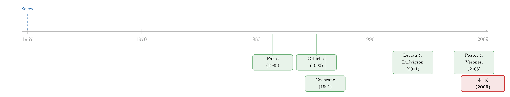

技术，是市场最被忽视的「预报员」
本文读的是 Hsu (2009, Journal of Financial Economics)：把整个国家的专利和研发支出聚合起来，做成两个「技术冲击」指标，它们能正向地、且彼此独立地预测下一个季度的美股真实收益与风险溢价——一个标准差的专利冲击，对应下季 S&P500 收益约 +2.3%，比 cay 还猛。这条规律不只在美国成立，在中国、印度和大多数 G7 国家也能看到。
1 引言：预测市场，为什么总在「老地方」找钥匙
研究市场收益可预测性 (return predictability) 的文献，已经像一座越堆越高的仓库。人们试过了几乎所有能想到的宏观与金融变量：滞后收益、股息率、期限利差、违约溢价、相对短期利率、账面市值比、股息盈余比、消费财富比 cay、劳动收入消费比……（关于「贴现率会变、所以收益可预测」这件事本身，可参见《贴现率：资产定价的中心议题》）。
但你有没有发现，这一长串候选变量，几乎全是金融与宏观总量——价格、利率、消费、产出。它们描述的是经济这台机器运转得快不快，却很少有人去问：这台机器有没有换上更好的零件。
而经济学里有一个几乎不需要争辩的共识：自 Solow (1957) 以来，技术进步被公认为长期经济增长与波动的首要驱动力。既然技术是推动总财富的根本力量，那么一个自然的问题是——
技术创新里，会不会藏着关于未来市场收益的、别人都没读到的信息？
这正是 Hsu (2009) 要回答的。它的核心主张一句话就能说清：技术创新会抬高总量层面的预期股票收益与风险溢价。听上去像常识，但要把它做成一个干净、可检验、且经得起折腾的实证命题，难点全在「怎么度量技术」。
2 怎么把「技术」装进一个数字里
度量技术，作者用了两样东西：专利 (patents) 和 研发支出 (research and development, R&D)。
为什么是专利？这是本文一个相当有想法的选择。在金融文献里，R&D 用得多，专利却几乎没人碰（作者数下来，此前只有 Pakes (1985)、Rossi (2005)、Seru (2007)、Acharya & Subramanian (2008) 四篇，且后三篇都在做公司金融）。但作者认为，专利在很多方面比 R&D 更信息丰富：第一，专利是已经实现、随时可投入商用的创新，而 R&D 只是投入；第二，专利法的属地原则，让专利数据更能精确刻画一国的技术进步；第三，专利是知识产权市场上交易最活跃的无形资产——他甚至提到，第一只基于专利的 ETF（Claymore/Ocean Tomo Patent ETF）在 2006 年 12 月 15 日才刚刚上市。
接着是构造。作者先把流量累积成存量：
- 专利存量：以 Hall, Jaffe & Trajtenberg (2001) 给出的「截至 1975 年底共
4,065,811件专利」为基数，逐季加上 USPTO 的专利申请流量，得到 1976Q1–2007Q4 的序列； - R&D 存量：以美国国家科学基金会估计的「1989 年前全行业
$2,799十亿（1996 年美元）」为基数，逐季加上 Compustat 汇总的全行业 R&D 流量，得到 1989Q1–2006Q4 的序列。
然后取对数增长率，记为 rpat（专利增长）与 rrd（R&D 增长）。
但真正关键的一步在于：增长率本身是高度持续 (persistent) 的，直接拿去做预测会被趋势污染。于是作者借鉴 Griliches (1984) 与 Campbell (1990, 1991) 的做法，对增长率做随机去趋势 (stochastic detrending)——用当期值减去过去四个季度的移动平均，得到两个「冲击」：
$$\text{Tech1}_t = \ln\!\left(r^{pat}_{t}\right) - \frac{1}{4}\sum_{h=1}^{4}\ln\!\left(r^{pat}_{t-h-1}\right)$$
$$\text{Tech2}_t = \ln\!\left(r^{rd}_{t}\right) - \frac{1}{4}\sum_{h=1}^{4}\ln\!\left(r^{rd}_{t-h-1}\right)$$
Tech1 是专利冲击 (patent shocks)，Tech2 是 R&D 冲击 (R&D shocks)。这一步看似平淡，却是全文识别的支点：它把「技术增长里那部分出乎意料的成分」单独拎了出来——而预期收益要响应的，恰恰是意外，而非可预见的趋势。移动平均法还有两个好处：简单、不依赖主观的模型选择，且天然没有前视偏误 (forward-looking bias)。
作者特意强调，这里用的是单变量去趋势——因为他找不到任何经济变量能预测专利增长和 R&D 增长本身（呼应 Chen, Roll & Ross (1986) 的做法）。换句话说，技术冲击是「干净」的新息，不是别的预测变量的影子。
值得记住两个数字：专利冲击的一阶自相关是 0.622，R&D 冲击是 0.808——这低于文献里大多数预测变量。也就是说，这两个指标不像股息率那样「黏」得吓人，后面我们会看到，这一点很要紧。
3 它和 Solow 残差，是两回事
读到这里，做宏观的人一定会嘀咕：这不就是 Solow (1957) 残差吗？作者预判了这个问题，并花笔墨把两者划清界限——这恰恰是理解本文的钥匙：
- Solow 残差是「全要素生产率里所有解释不了的部分」，里面混进了战争、石油危机、财政冲击、自然灾害，这些和技术进步八竿子打不着（Denison (1967)、Basu & Fernald (2002) 都指出过这种混淆）；
- Solow 残差同时包含暂时与永久冲击，而技术创新主要带来对实体经济的永久性影响；
- 最关键的反差在符号上：文献普遍发现 Solow 残差对未来市场收益是负向的（如 Balvers, Cosimano & McDonald (1990)、Kothari, Lewellen & Warner (2006)），而本文里技术创新与未来收益正相关。
于是悬念变得清晰：如果技术冲击真的有独立的、正向的预测力，那它就不是 Solow 残差的马甲，而是一类被忽视的全新信息。
4 为什么技术创新会抬高预期收益
在亮出回归结果之前，先把经济直觉摆出来。作者给了三条理由，把技术和预期收益连起来：
第一， 技术创新提高了代表性企业的预期生产率与盈利能力。 第二， 技术创新改善整体效率、降低投资成本。 第三，——这条最有意思——技术创新像期权 (options)，其收益比实物投资更波动。
把这三条串起来的，是投资基础资产定价里的一个经典等式：企业的预期股票收益 = 预期投资收益（Cochrane (1991)、Restoy & Rockinger (1994) 证明，Liu, Whited & Zhang (2008)、Chen & Zhang (2009) 进一步用它刻画截面）。既然技术创新推高了投资收益，那么股票收益也会随之上行。（投资基础资产定价究竟靠不靠谱，可参见《一个「成功」的模型，为什么经不起逐年对账？》。）三条理由都指向同一个方向：技术创新越多，预期市场收益与风险溢价越高。
5 识别策略与主要结果
5.1 测试设计
作者用的是最朴素也最透明的工具——无条件预测回归 (unconditional predictive regression)：把市场组合下一期的真实收益或超额收益，回归到本期的技术冲击和其它预测变量上。
$$r^{s}_{t+1} = \text{const.} + b\,\text{Tech}_t + u_{t+1}, \qquad r^{e}_{t+1} = \text{const.} + b\,\text{Tech}_t + u_{t+1}$$
这里 \(r^{s}\) 是 S&P500 真实收益（指数对数收益减通胀），\(r^{e}\) 是市场溢价（减一月期 T-bill 收益）。因为是无条件回归，系数 \(b\) 可以直接解读为市场收益对技术创新的「平均响应」。如果本文的假说为真，\(b\) 应当显著为正。控制变量则是文献里那一长串老面孔：滞后收益、d2p、Term、Default、RRel、d2e、cay、SW。标准误同时报告 Newey & West (1987) 与 Hodrick (1992) 两套 t 值——后者对预测回归里的小样本问题更稳健。
5.2 结果：经济上和统计上都站得住
先看单变量回归（Table 2）。一季度向前看：
- 滞后专利冲击能解释市场真实收益的
8.5%（调整 \(R^2\)），R&D 冲击能解释7.6%； - 对市场溢价，两者分别解释
8.1%和5.9%； - 系数在 5% 水平显著（Newey-West 与 Hodrick 两套 t 值都支持），只有一处 Hodrick t 值偏边际。
把冲击标准化后，经济含义一目了然：当本季专利冲击比常态高出一个标准差，下一季 S&P500 的预期收益就上升 2.3%；R&D 冲击高一个标准差，对应 2.2%。作为对照，同样口径下 cay 高一个标准差只带来 1.2%。也就是说，技术冲击的「拳头」比公认有效的 cay 还要硬。
接着，一个自然的问题是：会不会这只是某个已知预测变量的伪装？作者用两两赛马 (pairwise horserace) 回答——把技术冲击和每一个其它预测变量同时塞进回归（Table 3）。结果是：专利冲击的 Newey-West t 值全部在 3.0 以上，远高于其它变量；R&D 冲击在控制其它变量后也依然显著。更扎眼的是，在这个样本期里，其它预测变量大多失灵了——只有 cay 和 RRel 还算显著。这和 Goyal & Welch (2008) 关于「样本外可预测性其实很弱」的发现是一致的（作者把它归因于 1970 年代以来的技术革命浪潮造成了状态均值漂移，呼应 Lettau & Van Nieuwerburgh (2008)）。
一个贯穿全文的细节：专利冲击始终跑赢 R&D 冲击。这与作者一开始的论证一致——专利是「已实现」的创新，比作为投入的 R&D 更接近真实的技术进步。
5.3 走出美国
如果这真是一条普遍规律，它就不该只在美国成立。作者把分析推向国际：用中国的专利数据，发现中国专利冲击显著预测中国股指的真实收益与超额收益；用 G6 加印度的国别 R&D 冲击，发现除法国外，所有国家的 R&D 冲击都与未来市场收益和溢价正相关，混合回归 (pooled regression) 里更是显著。技术驱动的可预测性，看来是跨国界的。
6 文献脉络
把这篇论文放回它生长的土壤，脉络其实很清楚。
源头是 Solow (1957)：技术进步第一次被正式写进增长核算。但 Solow 残差混入了太多与技术无关的噪声，于是后来者要把「技术」从「残差」里剥出来。
在公司层面，Pakes (1985)、Griliches (1984, 1990) 这一脉，用专利与 R&D 数据去解释企业价值与生产率，奠定了「专利可以当经济指标」的方法论。沿着 firm-level 走下去，是 Austin (1993)、Lev & Sougiannis (1996)、Chan, Lakonishok & Sougiannis (2001) 等对创新与股票收益的横截面研究。
另一条线是收益可预测性：从 Campbell (1990, 1991) 的随机去趋势与预期收益持续性，到 Lettau & Ludvigson (2001) 的 cay，预测变量的「动物园」越建越大。本文恰好站在这两条线的交汇处——把 Pakes 那套测度技术的工具，搬进 Campbell 那套预测收益的框架，第一次在总量层面做出了技术驱动的时序可预测性。
与它最近的邻居是 Pastor & Veronesi (2008)：他们论证不确定的技术革命会催生股价泡沫。两者都把技术放进资产定价，但本文谈的是预期收益的可预测性，而非泡沫。（关于创新如何被市场反复错误定价，亦可参见《泡沫里，市场给创新贴错了两次价签》。）

7 评论与延伸（Q&A + 研究方向）
(a) 几个可能的疑问
Q：技术冲击和 Solow 残差到底差在哪？这是不是新瓶装旧酒？
不是。三点区别：Solow 残差混入了战争、油价、财政、灾害等非技术扰动；它同时含暂时与永久冲击，而技术创新主要是永久性的；最致命的是符号——Solow 残差对未来收益是负向的，技术冲击却是正向的。符号相反，说明两者捕捉的根本不是同一样东西。
Q：专利冲击的自相关高达 0.622，会不会让「可预测性」只是统计假象？
这是最该警惕的点。Shephard & Harvey (1990) 早就证明，在有限样本里很难把「含自相关成分的过程」和「i.i.d. 过程」区分开（Bansal & Lundblad (2002)、Bansal & Yaron (2004) 都援引过）。作者的辩护是：技术冲击的自相关其实低于文献里大多数预测变量（
cay是 0.880，d2p是 0.986），而且同时报告了 Hodrick (1992) 这套对持续回归子更稳健的 t 值。所以问题存在，但相对而言并不算严重。
Q：用专利「申请日」而不是「授权日」当生效日，合理吗？
作者坦承这是 Abel (1984) 指出过的强假设。他的理由是：新技术一旦出现就开始影响实体生产——消费者常看到标着「patent pending」的新产品，说明从申请之日起知识产权就已在保护、技术已在起作用。这是个可辩护但非铁板钉钉的选择。
Q：为什么专利冲击的预测力比 R&D 冲击更强？
因为专利是已实现的创新，R&D 只是投入——不是每一美元 R&D 都能变成发明，且不同专利价值悬殊。专利更贴近真实的技术产出，自然信息含量更高。作者用「大数定律」（Scherer、Griliches）为加总辩护：把所有专利和 R&D 加总，特质噪声会被平均掉，留下的是总量技术增长的好测度。
Q：长期（多季度累积）回归里的可预测性，可信吗？
这是预测回归文献的老雷区。长期累积收益回归极易制造虚假显著（Boudoukh, Richardson & Whitelaw (2008) 称之为「长期可预测性的神话」，Stambaugh (1999) 的偏误也在此放大）。本文确实做了 k 季度累积回归，结论应当谨慎对待——短期（一季度）结果比长期结果更可信。（这类小样本陷阱的细节，可参见《用更多的数据，买来更大的偏差》。）
Q：这到底是「风险溢价」还是「错误定价」？
本文止步于记录可预测性，并诚实地在摘要里写「呼吁进一步的理论解释」。它给了三条直觉（生产率、效率、期权性），但没有结构模型把风险价格内生出来。所以严格说，它证明的是「技术创新能预测收益」，而非「技术创新是一个被定价的风险因子」——这是它最大的留白，也是后续工作的入口。
(b) 几个可能的研究问题与提案
1. 技术冲击能预测公司债超额收益与信用利差吗？
【经济故事】既然技术创新抬高预期股票收益，它对信用市场应当也有镜像含义：技术进步降低违约概率、抬高企业资产价值，理应压低信用利差、影响公司债的预期超额收益。股与债对同一束技术新息的反应是否一致，本身就是个有意思的资产定价问题。 【可行性】中。专利/R&D 冲击的构造可直接复用；公司债端用 TRACE + Mergent FISD 算月度超额收益，回归框架现成。难点在于公司债样本起于 2002 年，时序偏短，且要小心利差里流动性成分的干扰。
2. 把技术冲击拆到行业层面，去预测行业组合收益。
【经济故事】总量加总掩盖了大量结构信息——半导体的专利冲击和制药的专利冲击，对各自行业组合的预测力很可能天差地别。用行业级专利数据，可以检验「技术驱动可预测性」究竟集中在哪些高技术行业，并把识别做得更干净（行业固定效应 + 时间固定效应）。 【可行性】高。USPTO 专利可按技术分类映射到行业，Compustat 的 R&D 本就是公司级、可向上加总到行业。这是本文最自然、最 doable 的延伸。
3. 外资持有人会不会改变技术信息的国际传导？
【经济故事】本文发现技术可预测性跨国成立，但没问谁在把这条信息定进价格。如果一国股市的外资可投资度更高，全球投资者是否让该国的技术冲击更快、更充分地反映到收益里？这把「技术可预测性」和「投资者结构」连了起来。 【可行性】中。可借 MSCI 可投资度变化做准自然实验（思路类似《外资来了，全球新闻就传得更快吗？》），但跨国专利数据的可比性和频率是硬约束。
4. 技术冲击与市场流动性：创新浪潮里，流动性溢价怎么动？
【经济故事】技术革命往往伴随估值不确定性飙升（Pastor & Veronesi 的泡沫故事），不确定性又直接喂给流动性溢价。技术冲击是否系统性地预测了未来的市场流动性与流动性风险定价，是一个把「实体技术」与「市场微观结构」打通的方向。 【可行性】中低。流动性度量（Amihud、买卖价差）易得，但要把因果从「技术冲击 → 不确定性 → 流动性」这条链上识别出来很难，更像是相关性描述而非干净识别。
8 参考文献与我的判断
我的判断。 这篇论文的贡献是扎实而克制的：它第一个把专利这种被金融学冷落的数据，和 R&D 一起，做成总量技术冲击，并证明它们对市场收益与溢价有独立、正向、且经济量级可观（一个标准差约 2.3%）的预测力，还把它和 Solow 残差干净地区分开，最后用国际数据加固。在「预测变量动物园」里，它确实带进了一只新物种。
但对识别的担忧也很清楚。第一，这是无条件预测回归，所有「样本内可预测性 ≠ 样本外可用性」的批评都适用，作者自己也承认其它变量在该样本期普遍失灵，那凭什么相信技术冲击不会重蹈覆辙？我更想看到一个诚实的样本外（out-of-sample）检验。第二，文章止于「记录现象」，没有把技术创新内生为一个被定价的风险因子——三条直觉很动人，但没有结构模型，就无法回答「这是风险补偿还是定价错误」。第三，长期累积回归的结果需打折扣。
后续最想看到的，是把这条规律推进信用市场和横截面：如果技术冲击真是关于总财富动态的新信息，它就不该只在股指上留下脚印，而应当在公司债利差、在跨技术行业的截面收益上，留下一致而可识别的痕迹。那时，「技术是市场的预报员」才算从一个引人入胜的相关性，走向一个可被定价的机制。
参考文献
- Balvers, R.J., Cosimano, T.F., McDonald, B. (1990). Predicting stock returns in an efficient market. Journal of Finance 45, 1109–1128.
- Boudoukh, J., Richardson, M., Whitelaw, R.F. (2008). The myth of long-horizon predictability. Review of Financial Studies 21, 1577–1605.
- Campbell, J.Y. (1991). Measuring the persistence of expected returns. American Economic Review, Papers and Proceedings 80, 43–47.
- Chen, N.-F., Roll, R., Ross, S.A. (1986). Economic forces and the stock market. (引于正文 Chen, Roll & Ross 单变量方法)
- Cochrane, J.H. (1991). Production-based asset pricing and the link between stock returns and economic fluctuations. Journal of Finance.
- Goyal, A., Welch, I. (2008). A comprehensive look at the empirical performance of equity premium prediction. Review of Financial Studies.
- Griliches, Z. (1990). Patent statistics as economic indicators: a survey. Journal of Economic Literature 28, 1661–1707.
- Hall, B., Jaffe, A., Trajtenberg, M. (2001). The NBER patent citation data file. NBER Working Paper 8498.
- Hodrick, R.J. (1992). Dividend yields and expected stock returns. Review of Financial Studies 5, 357–386.
- Hsu, P.-H. (2009). Technological innovations and aggregate risk premiums. Journal of Financial Economics 94(2), 264–279.
- Lettau, M., Ludvigson, S. (2001). Consumption, aggregate wealth and expected stock returns. Journal of Finance 51, 815–849.
- Newey, W.K., West, K.D. (1987). A simple, positive semi-definite, heteroskedasticity and autocorrelation consistent covariance matrix. Econometrica 55, 703–708.
- Pakes, A. (1985). On patents, R&D, and the stock market rates of returns. Journal of Political Economy 93, 390–409.
- Pastor, L., Veronesi, P. (2008). Technological revolutions and stock prices. American Economic Review (forthcoming).
- Shephard, N.G., Harvey, A.C. (1990). On the probability of estimating a deterministic component in the local level model. Journal of Time Series Analysis 11, 339–347.
- Solow, R.M. (1957). Technical change and the aggregate production function. Review of Economics and Statistics 39, 312–320.